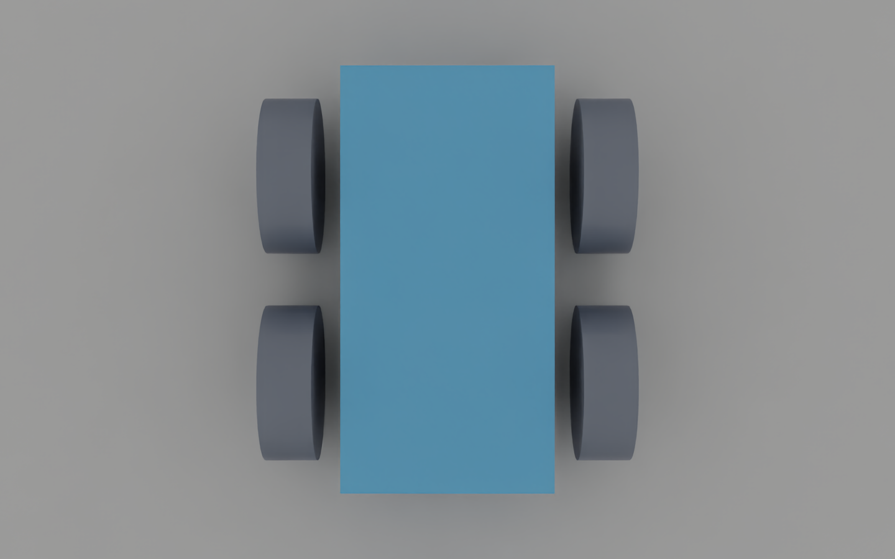
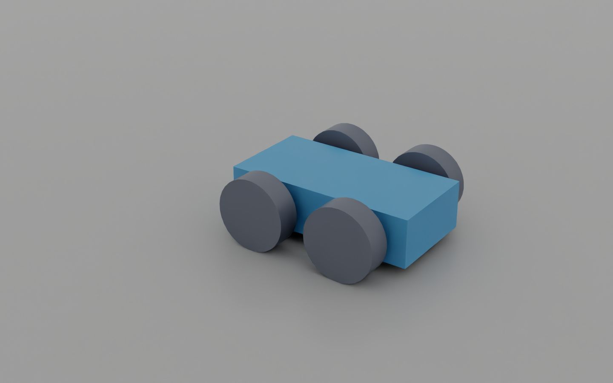

Lesson 1.1: Building a Simple Robot (Isaac Sim 6.1)#
Your first robot starts as five separate shapes. By the end of this lesson, its wheels will stay attached, support the chassis, and drive it across the floor. Along the way, you will deliberately make a cube fall and a robot fall apart so you can see what each physics component contributes.
Your finish line: save a four-wheeled robot that drives forward when you press Play. Before you begin: launch Isaac Sim and start a new scene. No ROS 2 setup or Python coding is needed for the GUI exercise. Allow 45–60 minutes, plus first-launch loading time.
Expected result: with the rear drives at 50 °/s the robot moves about 0.96 m in 3 simulated seconds (50 °/s × 0.375 m ≈ 0.33 m/s). The checkpoint script measures exactly this.

You will learn to
- Navigate the viewport and read the Stage / Property panels
- Tell visual meshes from physics (rigid bodies, colliders, physics scene)
- Connect bodies with revolute joints and drive them with angular drives
- Group bodies into an articulation that controllers can address

You only need three ideas to begin: the Stage panel lists the objects, the Property panel changes the selected object, and Play starts the simulation. The rest will make sense as you build.
Part 1: Launch and navigate#
cd ~/isaacsim # your Isaac Sim installation folder (contains isaac-sim.sh and python.sh)
./isaac-sim.sh
🔄 6.1: there is no
isaac-sim.selector.shand no Start button. The ROS 2 bridge loads by itself with bundled Jazzy libraries, so leave it on (the course says to disable it in 4.5).
The first launch takes a few minutes while shaders compile. Later launches are faster.
Viewport navigation hasn't changed:
| Action | Input |
|---|---|
| Fly | hold RMB + W A S D, Q/E down/up |
| Look around | hold RMB and drag |
| Zoom | mouse wheel, or Alt + RMB |
| Pan | hold MMB and drag |
| Frame selection | F |
The default stage has World and defaultLight in the Stage panel (top right). The Property panel (bottom right) shows whatever you select.
Part 2: Make a cube fall, then catch it#
Predict first: if you draw a cube and press Play, will it fall? Try it before adding physics. Keep the simulation stopped while editing; after each experiment, press Stop to reset the scene.
- Create > Mesh > Cube.
- Press Play (▶ on the left toolbar, or
Space). The cube stays still. Press Stop. - Create > Physics > Physics Scene. The default is Earth gravity along −Z (see the axis gizmo, bottom left).
- Press Play. Still nothing. Stop before adding the rigid body.
- Right-click Cube in the Stage panel → Add > Physics > Rigid Body with Colliders Preset.
- Viewport toolbar eye icon (Show by type) > Physics > Colliders > Selected. A green collision outline appears.
- Play. The cube falls because it now has a rigid body, but there is no floor to catch it. Stop.
- Create > Physics > Ground Plane. Expand GroundPlane to see
CollisionMeshandCollisionPlane. - Select the cube and set Property > Transform > Translate Z = 1.
- Play. The cube lands on the ground. Stop (■) resets it.
- (Optional) Select PhysicsScene and change Gravity Direction, then play.
- File > Save As… → e.g.
learning_resource/output/my_simple_robot.usd.
What changed? A visible mesh gives the cube its appearance. A rigid body gives it simulated motion; a collider gives it a shape that can hit the ground. The physics scene supplies gravity and simulation settings. Adding one does not replace the others.
Check before continuing: the cube falls onto the ground and Stop returns it to its starting pose.
Part 3: Turn the cube into a chassis#
The Stage is a tree of prims, the objects and containers in a USD scene. An Xform is a container
with a position, rotation, and scale. Group the robot's parts beneath one so you can place them together.
- Select the cube and set Translate (0, 0, 0), Scale (2, 1, 0.5).
- Right-click empty space in the Stage panel → Create > Xform. Double-click it and rename it to SimpleRobot.
- Drag Cube onto SimpleRobot, so the cube becomes its child.
- Select SimpleRobot and set Translate Z = 1. The cube moves with it (the Xform is a container).
- Set SimpleRobot Translate Z back to 0 for now. You lift the whole robot in Part 5.
Part 4: Add wheels and discover what is missing#

- Right-click SimpleRobot → Create > Mesh > Cylinder.
-
Set the cylinder's transform:
Rotate Scale Translate X 90 0.75, 0.75, 0.25 0.5, 0.75, 0 -
Rename it Front_Left_Wheel.
-
Duplicate it three times (Ctrl+D) and rename and position the copies:
Name Translate Front_Left_Wheel 0.5, 0.75, 0 Front_Right_Wheel 0.5, −0.75, 0 Rear_Left_Wheel −0.5, 0.75, 0 Rear_Right_Wheel −0.5, −0.75, 0 Wheel diameter = 0.75 m, so the radius is 0.375 m. That is larger than half the 0.5 m chassis height: the wheels should touch the ground while the chassis stays above it.
-
Make sure all four wheels and the Cube are children of SimpleRobot.
- Select the 4 wheels → right-click → Add > Physics > Rigid Body with Colliders Preset. Do the same for Cube if you started a fresh stage.
- Before pressing Play, predict whether the wheels will stay attached. Try it: the pieces are separate rigid bodies, with no joints to connect them. Stop, then File > Save.
You have a robot-shaped collection of objects. Next you will give the connections a physical meaning.

Part 5: Keep the wheels attached while letting them turn#
A revolute joint connects two bodies while allowing rotation around one axis. For a wheel, that axis must follow its axle. Here it is Y. The wheel was rotated 90° about X, so its local joint frame needs a −90° correction to align with the chassis frame.
For each wheel:
- Click Cube, then Ctrl+click the wheel (body 0 = Cube, body 1 = wheel; order matters).
- Right-click → Create > Physics > Joint > Revolute Joint.
-
On the new joint, set:
- Axis = Y
- Local Rotation 0 = 0, 0, 0
- Local Rotation 1 = −90, 0, 0
-
Deselect and reselect the joint. The red (X) arrows of both frames line up and the blue (Z) arrows match. Arrow direction doesn't matter.
- Rename it Front_Left_Joint, Front_Right_Joint, Rear_Left_Joint, Rear_Right_Joint. In 6.1 the joint is created under the wheel. You can drag it under SimpleRobot to keep the tree tidy.
Finally, select SimpleRobot and set Translate Z = 0.375, so the wheels rest on the ground plane.
Check before continuing: press Play. The wheels should stay attached, and the chassis should rest above the floor. It does not drive yet. Stop before adding the motors.
Part 6: Give the rear wheels a motor#
A joint allows motion; a drive asks for motion. With stiffness set to zero, the drive responds to a velocity target. Damping controls that response. The target below is in degrees per second.
Predict first: both rear wheels will receive +50 °/s. Will the robot move forward or spin?
- Right-click Rear_Left_Joint → Add > Physics > Angular Drive.
- Set Damping = 10000, Stiffness = 0, Target Velocity = 50 (degrees per second).
- Repeat for Rear_Right_Joint.
- Play. The robot drives forward along +X.
- File > Save.
Explain the result: both wheels turn in the same direction, so the robot travels forward. With
wheel radius 0.375 m, the ideal rolling speed is (50 × π / 180) × 0.375 ≈ 0.33 m/s.
This estimate assumes rolling without slip; it is a useful comparison, not an exact promise.
Try one change: set one rear drive to −50 °/s and leave the other at +50 °/s. Predict the motion, then press Play. Stop and restore both to +50 before saving.
Why does the robot turn?
The driven wheels now try to roll in opposite directions. This produces a turning motion rather than both sides moving forward together. Contact friction and the passive front wheels affect the actual turn.

Troubleshooting#
| Symptom | Fix |
|---|---|
| Robot drags or bounces | Wheels must reach lower than the body (check wheel scale 0.75 and Z = 0) |
| Wheels fly off or wobble | Joint Body 0 / Body 1 swapped (should be Cube → wheel), or Local Rotation 1 isn't −90, 0, 0 |
| Robot spins instead of moving forward | One drive has the opposite sign |
| Something odd | Disable joints one at a time (Joint Enabled checkbox) to find the bad one |
Compare with the checkpoint#
./python.sh learning_resource/scripts/m1_build_simple_robot.py # watch it drive
./python.sh learning_resource/scripts/m1_build_simple_robot.py --headless --test --save learning_resource/output/simple_robot.usd
Save your own scene first. Then File > Open learning_resource/output/simple_robot.usd and compare
its joints with yours. The checkpoint also adds an Articulation Root, which groups the connected
bodies and joints for the controller used in lesson 1.2. Your manual scene adds it in that next lesson.
Check your result#
| Do this | You should see |
|---|---|
| Cube alone, Play | nothing happens (no physics yet) |
| Cube with rigid body, no ground | falls forever |
| Robot with joints, no drives | rests on its wheels |
| Rear drives at 50 °/s | drives along +X at ≈ 0.33 m/s |
m1_build_simple_robot.py --headless --test |
[m1] PASS: robot drove forward |
Exercises#
- Set the rear drives to +50 / −50 °/s. What happens, and why?
- Change the wheel scale to 1.0 (Ø 1 m). Predict the new speed, then measure it (select Cube → Property → Rigid Body → Linear Velocity while playing).
- Add drives to the front joints too (4-wheel drive). Does it go faster? Why not?
- Swap Body 0 and Body 1 on one joint and watch what breaks — then undo it.
Quiz#
-
Why does a cube with only a Rigid Body (no collider) fall through the ground?
Answer
Collisions need a collision shape on both prims; the rigid body only adds dynamics. -
Stiffness 0, damping 10000, target velocity 50 — position or velocity drive?
Answer
Velocity drive: with zero stiffness only the velocity error produces torque. -
In what unit is the angular drive's Target Velocity?
Answer
Degrees per second.
Your next mission#
You can make the robot move, but its speed is fixed in the joint properties. In lesson 1.2, connect a controller and use the keyboard to choose when to drive and turn. Save your scene before moving on.
Following the original NVIDIA course?
This lesson corresponds to “Building Your First Robot → Building a Simple Robot.” See the original learning path and the 6.1 differences when the video menus differ from your screen.